See your best.
Sacramento's most established eye surgeons, since 1987.
The premier center for every eye care need in the Sacramento region.
Drs. Richard Jones, David Kira, Shawn Palmer, Christian Serdahl and Sina Rashidi are highly respected eye surgeons. The senior partners each bring more than 35 years of expert medical and surgical eye care, the practice has been in Sacramento since 1987, and its physicians have been recognized as Best Doctors in Sacramento by their peers and have led the local ophthalmology community.
Our offices provide a full range of services, from routine eye care to advanced medical and surgical treatment: state-of-the-art cataract surgery, laser (LenSx) cataract surgery, advanced lens options including the Light Adjustable Lens, glaucoma care, dry eye therapy, diabetic eye care, and vision correction with LASIK and PRK.
Working alongside the surgeons, optometrists Drs. Andrew Chun and Huda Minhas provide eye exams, glasses prescriptions, and care for diabetic eyes, dry eye and glaucoma.
Complete eye care, from your first exam through surgery.
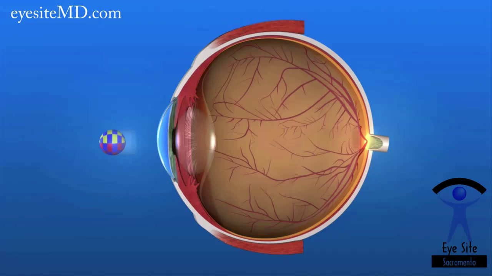
Cataract surgery
Laser-assisted LenSx surgery and advanced lens options, including the Light Adjustable Lens that is fine-tuned after your procedure.
Learn more
Glaucoma
Pressure monitoring, OCT nerve-fiber imaging, drops, laser treatment and surgery to protect your optic nerve for the long term.
Learn more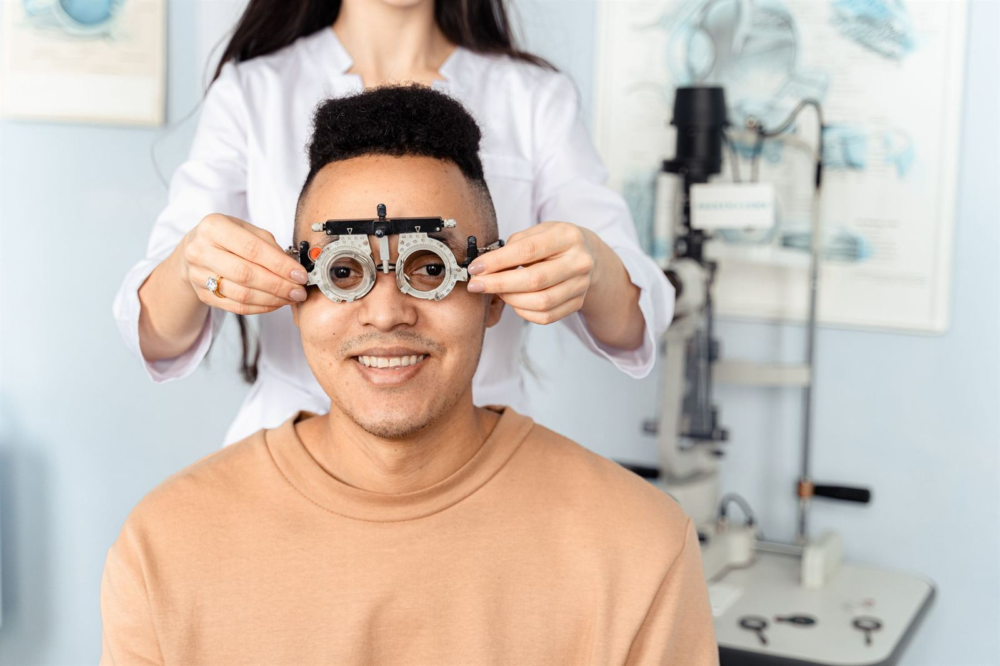
LASIK and PRK
Laser vision correction for patients who want to depend less on glasses and contacts, beginning with a candidacy exam.
Learn more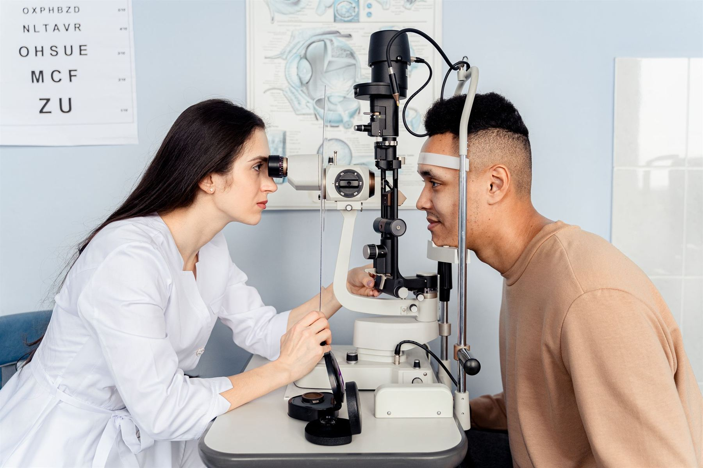
Comprehensive vision care
Routine and diabetic eye exams, glasses prescriptions, and the early detection that keeps small problems small.
Learn more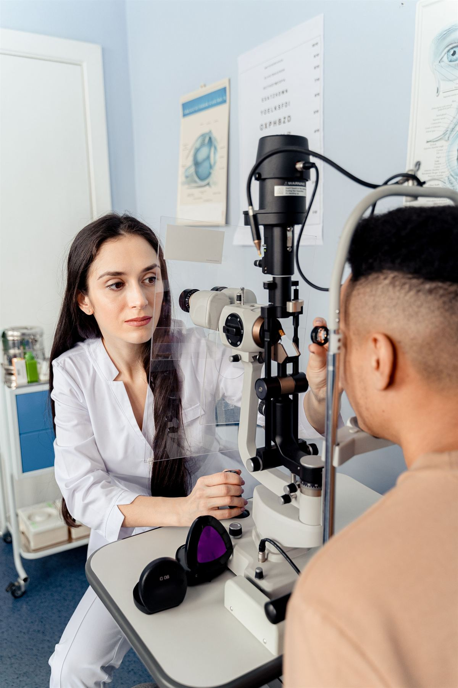
Diabetic eye care
Annual dilated exams and treatment for diabetic retinopathy, coordinated with your primary care team.
Learn more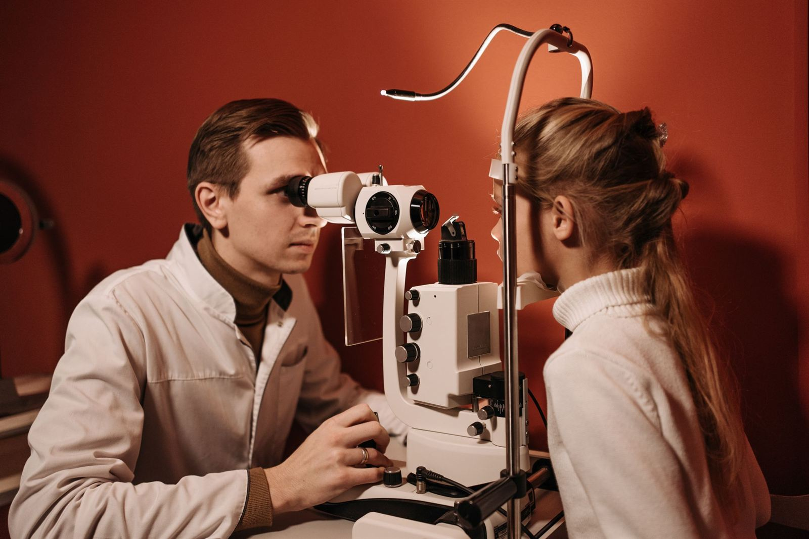
Dry eye, retina and urgent care
Dry eye therapy, macular degeneration, floaters and flashes, red or painful eyes, and sudden changes in vision.
Learn more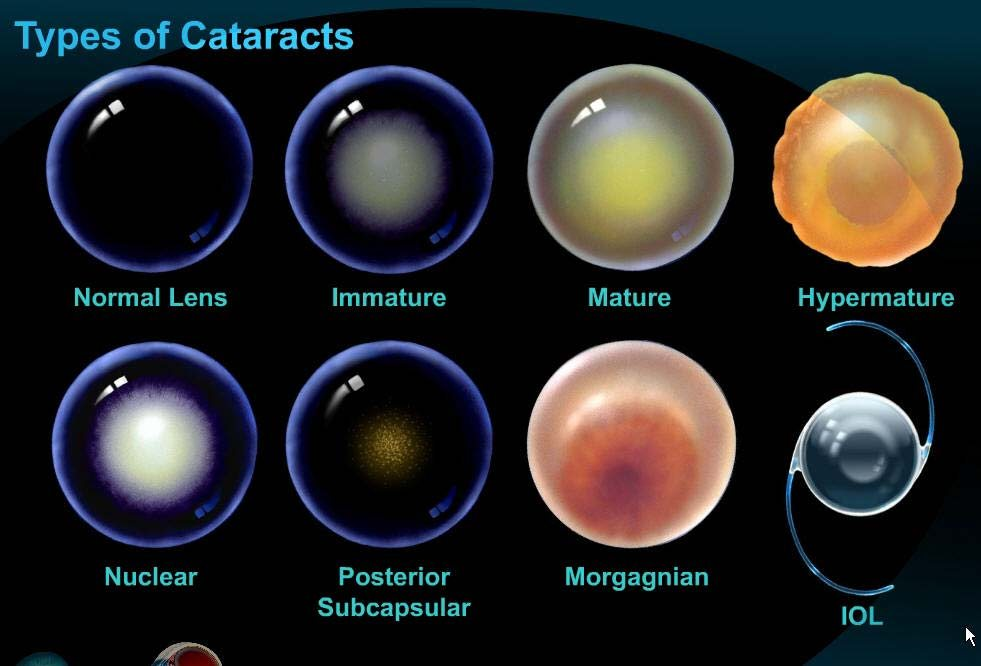
Laser precision, surgeon's judgment.
The LenSx femtosecond laser performs the most delicate steps of cataract surgery with computer-guided accuracy, and your surgeon finishes the procedure by hand. Surgery takes place at an outpatient surgery center; your consultation, measurements and follow-up visits happen in our offices, which also carry Zeiss OCT imaging that can detect glaucoma years before any vision is lost.
- LenSx laser-assisted cataract surgery
- Multifocal and toric lens implants
- Zeiss OCT retinal nerve-fiber imaging

The only lens you can fine-tune after surgery.
Once your eye has healed, a series of painless light treatments adjusts the lens to your real-world vision, so the prescription is set by what you see, not by a prediction made before surgery.
How it worksFour decades of surgical experience. Recognized by their peers.
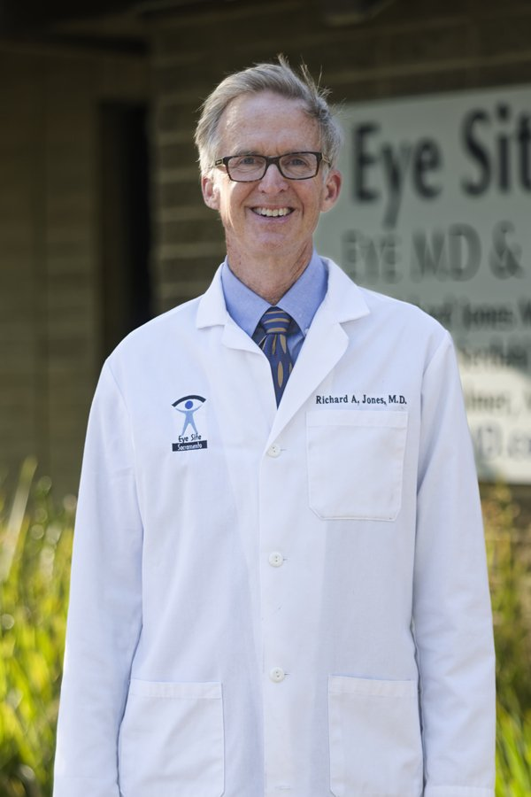
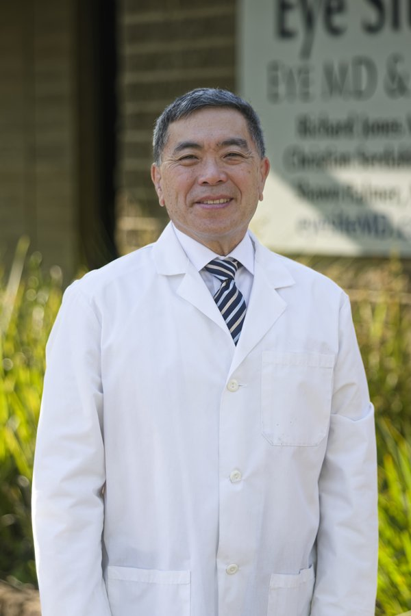

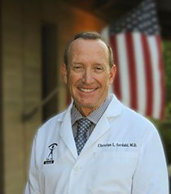
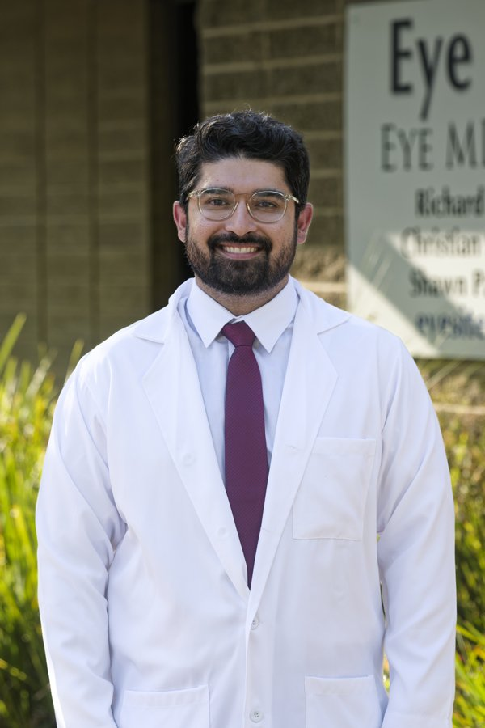
Calm rooms, modern lanes, convenient free parking.


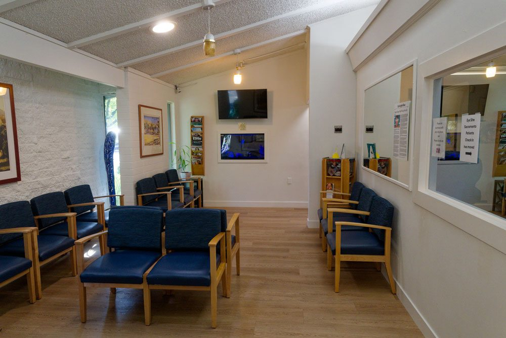
We accept all major plans.
Bring your card to your first visit. If your plan is not shown here, call either office and we will check it before you come in.

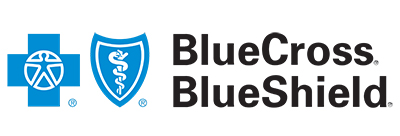

Central Sacramento and the Folsom foothills.
- Address
- 4925 J Street, Sacramento, CA 95819
- Hours
- Monday to Friday, 8:00am to 5:00pm
- Fax
- 916-452-4659
- Address
- 2160 E Bidwell Street, Folsom, CA 95630
- Hours
- Monday to Thursday, 8:00am to 4:30pm
Friday, 6:30am to 2:00pm - info@eyesitemd.com
Ready to see your best?
Call either office or send a request online. We confirm every appointment by phone within one business day.